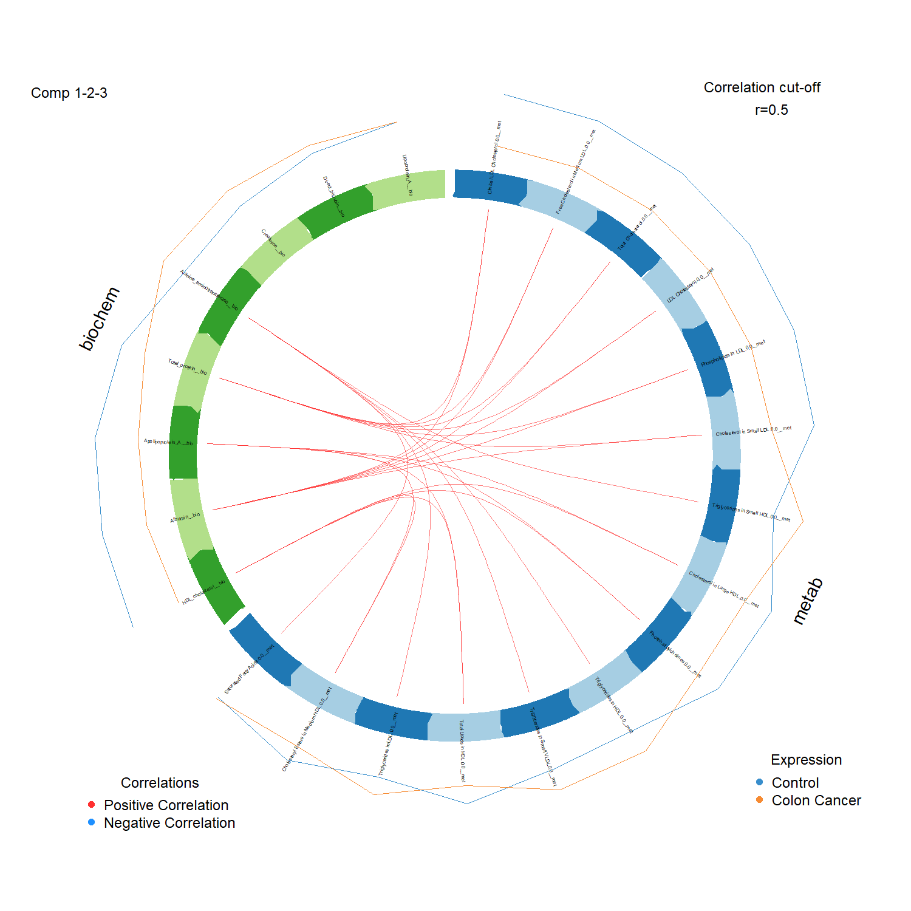
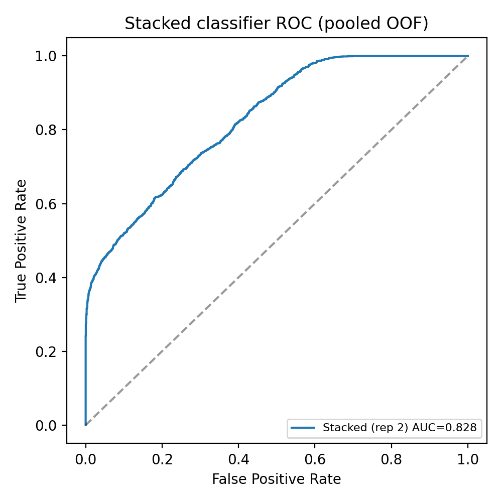
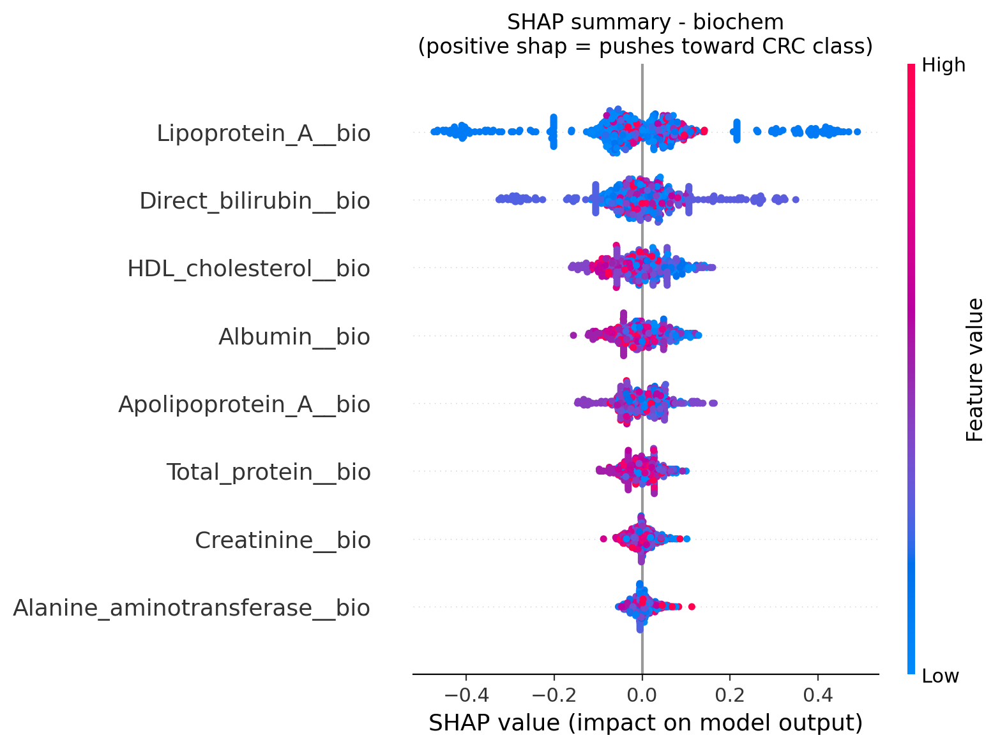
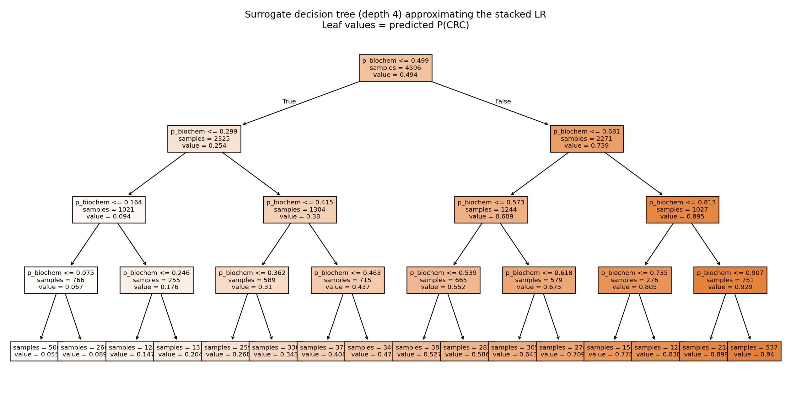
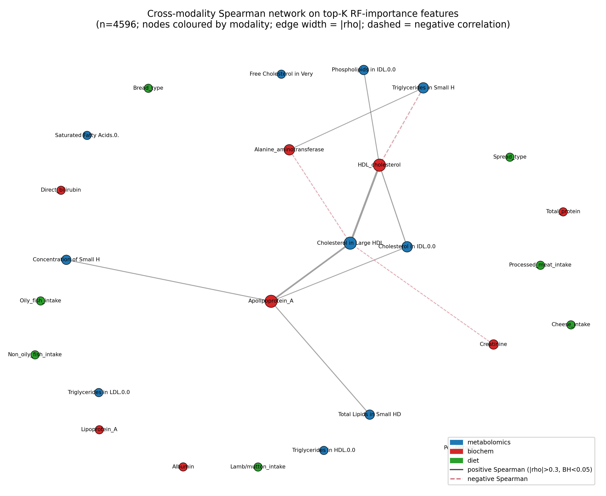

A reproducible multi-omics pipeline that fuses blood metabolomics, clinical biochemistry, and diet to classify colorectal cancer. It compares two integration strategies and separates what fusion adds for prediction from what it adds for biology.
Python · R (mixOmics) · SHAP · UK Biobank, n = 4,596

A cancer cohort carries several kinds of data per patient. Two questions follow from that. Does combining them classify colorectal cancer better than the best single source? And does combining them reveal biology that no single source shows on its own? I built one pipeline to answer both, and the answers pull in different directions.
Clinical biochemistry alone already does most of the work. Fusing the modalities adds a real but small amount on top, which is the honest headline of this project.
| Model | Strategy | AUC |
|---|---|---|
| Random Forest, biochemistry alone | per-modality | 0.824 |
| Random Forest, metabolomics alone | per-modality | 0.565 |
| Stacked logistic regression | late fusion | 0.827 |
| rCCA, component 1 (shared structure) | intermediate | ρ = 0.884 |

Figure 1. ROC for the stacked late-fusion classifier (AUC ≈ 0.83), evaluated with 5-fold cross-validation repeated three times. Late fusion adds roughly +0.004 AUC over biochemistry alone.
I used SHAP and a small surrogate tree to see what drives the decision. Both point to the same place: the biochemistry block, led by HDL, Apolipoprotein A-I, and albumin. The metabolomics block refines the call rather than leading it, which is worth knowing before anyone trusts the output.

Figure 2. SHAP values for the biochemistry model. Lipoprotein-A, direct bilirubin, and HDL-cholesterol carry the most weight in the per-patient decisions.

Figure 3. A depth-4 surrogate tree approximating the stacked classifier. Almost every split is on the biochemistry probability, which makes the biochemistry-led behaviour explicit.
The unsupervised side of the pipeline (DIABLO and regularised CCA) and a cross-modality correlation network all recover one axis. HDL and Apolipoprotein A-I in the clinical block link to HDL particle subfractions in the metabolite block. That shared structure, rather than the prediction score, is what integration actually buys here.

Figure 4. Cross-modality network at significant Spearman correlations. The dominant bridge runs along the HDL and Apolipoprotein A-I axis shared by both data blocks.
Fusion adds about +0.004 AUC over biochemistry alone, which is small. The value of integration here is biomarker discovery, the shared HDL and ApoA-I axis, not a better prediction. The data are cross-sectional, so this is association rather than a screening test. The full pipeline, the hyperparameter grid, and the verified clinical markers (every PMID checked on PubMed) are in the repository.